CubanWaterLab
ESENFR
CubanWaterLab
ESENFR
CubanWaterLab
ESENFR
CubanWaterLab
ESENFR
Cuatro doctorantes —tres en ciencias exactas y una en ciencias sociales— sostienen el trabajo diario del proyecto, junto a la coordinación binacional, una red de investigadores asociados y un amplio grupo de colaboradores en Cuba y Bélgica.
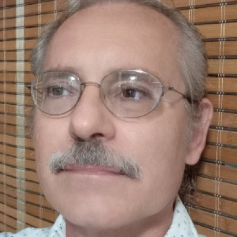
Centro de Sistemas Complejos, Universidad de La Habana
Ernesto Altshuler Álvarez se graduó summa cum laude de la Facultad de Física de la Universidad de La Habana en 1986 (tesis de diploma sobre materiales magnéticos). Defendió su doctorado en 1994 (tesis sobre materiales superconductores).
Es profesor de Física en la Facultad de Física de la Universidad de La Habana. Durante décadas ha investigado también en materia granular, dinámica de insectos sociales, motilidad bacteriana, materiales porosos y dinámica de fluidos. Esta diversidad de temas ha involucrado experimentos bastante insólitos[1][2][3].
Últimamente ha estado co-dirigiendo un proyecto cubano-belga financiado por ARES sobre la creación de instrumentos para el monitoreo in situ de la calidad del agua en bahías cubanas, algo que tiene poco que ver con su experiencia investigativa previa — aunque quizás sí con su afición al buceo libre.
El Prof. Altshuler ha sido investigador invitado en el Texas Center for Superconductivity (Houston, EE.UU.), la ESPCI (París, Francia), la Academia Noruega de Ciencias y Letras (Oslo, Noruega) y la Universidad Rockefeller (Nueva York, EE.UU.), entre otras instituciones. Su actividad científica ha sido reseñada en varias ocasiones (ver, por ejemplo[4]). Es Editor en Jefe de la Revista Cubana de Física[5] y miembro del consejo editorial de Granular Matter. Es Fellow de la Academia Mundial de Ciencias (TWAS, Trieste, Italia).
Es autor de varios libros de divulgación científica e historia de la ciencia, como Guerrilla Science: survival strategies of a Cuban physicist (Springer, 2017)[6]. Por cierto, su libro "A Different Kind of Splash" será publicado también por Springer en los próximos meses.
Entre sus aficiones están tocar guitarra (y componer), dibujar caricaturas, escribir cuentos, cuidar ancianos, la plomería, arreglar carros, cocinar sin mucho éxito, y un largo etcétera practicado con distintos niveles de amor, audacia y mediocridad. Es también un entusiasta divulgador científico, donde su formación profesional y sus aficiones se funden con un sentido del humor omnipresente (a veces corrosivo)[7].
Se le atribuye ser la fuerza motriz detrás de la estatua de Albert Einstein más entrañable jamás hecha[8].
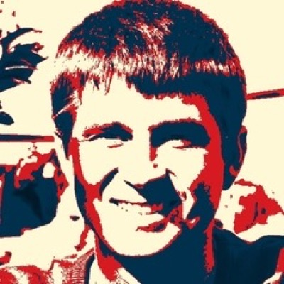
Université Libre de Bruxelles
Denis Terwagne es doctor en Mecánica de Fluidos por la Universidad de Lieja (2011) y realizó un posdoctorado en el MIT sobre mecánica de sólidos e inestabilidades mecánicas. Actualmente es profesor de Física en la Université Libre de Bruxelles, donde dirige el Frugal Lab del Fab Lab ULB, con investigaciones en materia blanda, elasticidad de estructuras delgadas e interacción fluido-estructura.
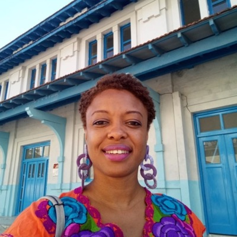
FLACSO, Universidad de La Habana
Geydis Fundora Nevot es socióloga y profesora auxiliar de FLACSO-Cuba, donde dirige la revista Estudios del Desarrollo Social: Cuba y América Latina. Su investigación se centra en políticas sociales, desigualdades, género e interseccionalidad en el desarrollo cubano.
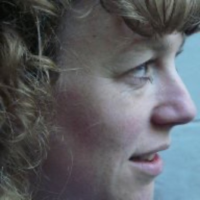
Université Catholique de Louvain
Florence Degavre es socioeconomista y profesora de la UCLouvain (IACCHOS), donde investiga la economía social, el trabajo de cuidados y la innovación social desde una perspectiva feminista. También es asesora del rector para género, igualdad e inclusión en la UCLouvain.
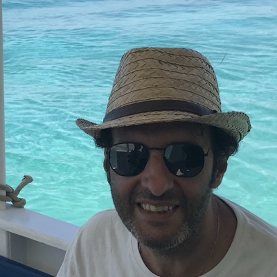
Université Libre de Bruxelles
Stamatios Nicolis es investigador sénior del Centro de Fenómenos No Lineales y Sistemas Complejos de la ULB, y estudia la autoorganización y el comportamiento colectivo en sistemas biológicos y artificiales mediante modelos matemáticos, procesos estocásticos y análisis de imágenes asistido por IA.
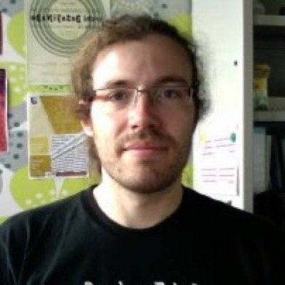
Université Libre de Bruxelles
Alexandre Campo es investigador sénior del laboratorio Biological & Artificial Self-organized Systems (BASS) de la ULB, especializado en robótica de enjambre, inteligencia de enjambre y comportamiento colectivo en sistemas biológicos y artificiales.
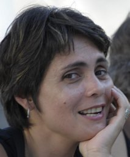
IMRE, Universidad de La Habana
Aramis Rivera Denis es investigadora titular (Dr.) del IMRE, Universidad de La Habana, y aporta al proyecto su experiencia en ciencia de materiales para los experimentos de biofouling y recubrimientos.
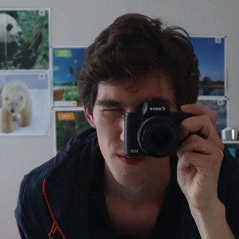
Frugal Lab, Université Libre de Bruxelles
Axel Cornu es el técnico de electrónica del Frugal Lab / Fab Lab ULB, donde trabaja junto a Denis Terwagne desde 2014. Graduado de la FabAcademy en 2019, apoya el desarrollo de hardware del proyecto en Bruselas.
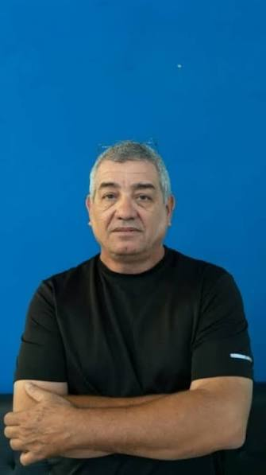
Espoleta Tecnologías
Orestes Chávez Linares es ingeniero de hardware en Espoleta Tecnologías, y contribuye a la electrónica de las boyas y los sistemas de comunicación del proyecto.
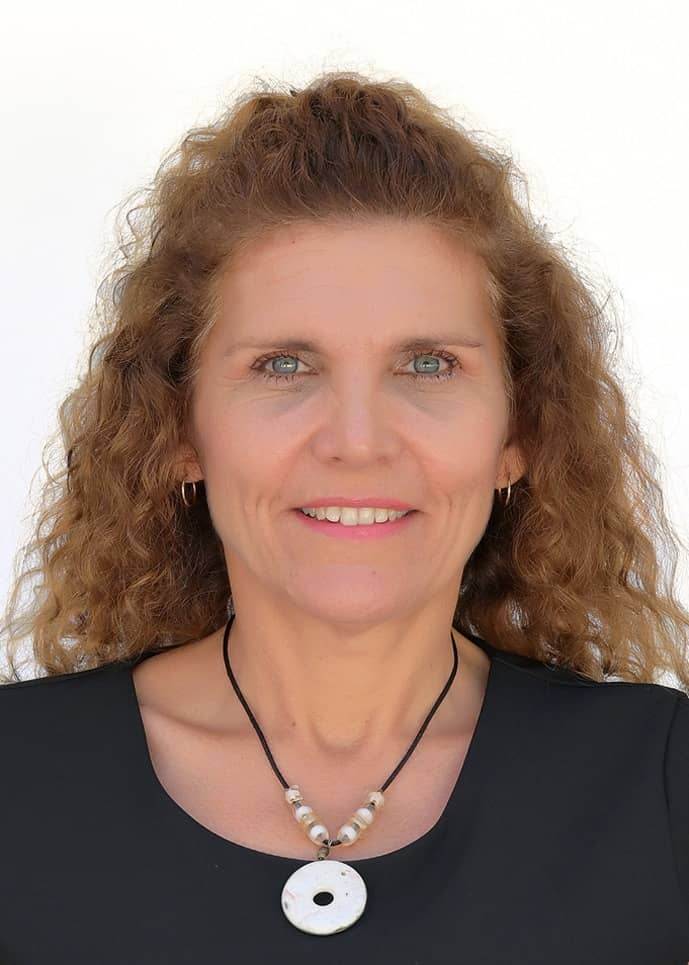
Cimab
Marlen Pérez Hernández (La Habana, 1970) es Licenciada en Física por la Universidad de La Habana (1993) y Máster en Impacto y Protección Ambiental por el Instituto Superior de Ciencias y Tecnologías Aplicadas (2001). Es investigadora auxiliar y especialista en calidad ambiental del agua marino-costera.
Actualmente es Directora Adjunta del Centro de Investigación y Manejo Ambiental del Transporte (Cimab), donde coordina las actividades del centro como Centro de Actividad Regional del Protocolo de Fuentes Terrestres de Contaminación Marina del Convenio de Cartagena. Ha dirigido varios proyectos nacionales sobre el monitoreo de la calidad ambiental de las principales bahías de Cuba, incluida la bahía de La Habana, y ha colaborado con proyectos regionales sobre el estado ambiental marino de la Región del Gran Caribe, junto a la Secretaría del Convenio de Cartagena del Programa de las Naciones Unidas para el Medio Ambiente.
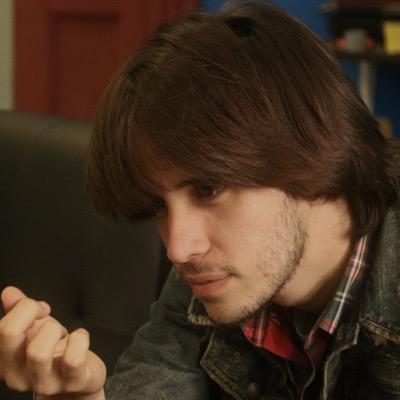
Instrumentación, boyas y espectrofotometría.
Alex M. Rivera Rivera es Ingeniero en Automática (CUJAE, 2023) y cofundador de ESPOLETA Tecnologías, la startup cubana detrás de Vórtice, la primera estación meteorológica de producción comercial del país. Actualmente cursa dos programas de doctorado en paralelo —Física en la Universidad de La Habana e Ingeniería y Tecnología en la Université Libre de Bruxelles—, ambos centrados en la percepción ambiental y el monitoreo de calidad del agua dentro de CubanWaterLab, y es autor de cinco publicaciones revisadas por pares en dinámica de fluidos, hardware abierto y robótica.
Documentó su paso por la FabAcademy de la ULB en 2024, y mantiene un registro más completo de su trabajo en alexmanuelrivera.com.
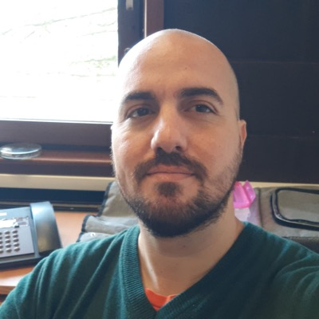
Canal de olas.
Luis Abel Rodríguez de Torner es Licenciado en Educación en la especialidad de Matemática-Física por la Universidad de Ciencias Pedagógicas Enrique José Varona, donde también obtuvo un diploma en Didáctica de la Educación Superior, y cursó cuatro años de Ingeniería Automática en la Cujae. Posee un Máster en Ciencias Físicas por la Facultad de Física de la Universidad de La Habana, con una tesis centrada en la aplicación de filtros de Kalman en experimentos de fluidodinámica. Asimismo, es egresado del programa internacional Fab Academy 2024, en el cual desarrolló el proyecto Making a Wave Flume.
Actualmente, se encuentra cursando un doctorado de doble titulación entre la Universidad de La Habana (Doctorado en Ciencias Físicas) y la Université libre de Bruxelles (Doctorado en Ingeniería y Tecnología). En el ámbito profesional, se desempeñó durante cinco años como profesor instructor de Física en el departamento de Matemática-Física de su alma mater. En la actualidad, ejerce como profesor asistente de Física General y Electrónica en la Facultad de Física de la Universidad de La Habana.
Sus principales líneas de investigación abarcan la física experimental, la dinámica de fluidos experimental —con énfasis en el diseño y la construcción de canales de olas— y la dinámica de fluidos computacional mediante el uso de DualSPHysics.
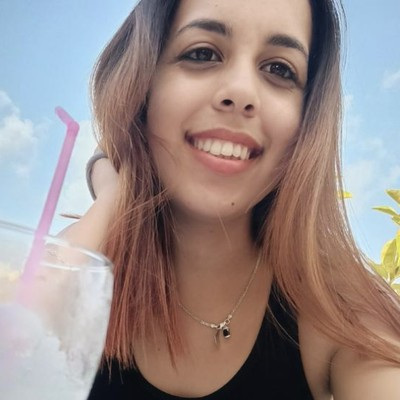
Biosensores, IA y espectrofotometría.
Daniela Martínez-Ortiz trabaja en el Centro de Sistemas Complejos de la Universidad de La Habana, donde desarrolla espectrofotómetros de bajo costo y herramientas de IA para detectar contaminantes biológicos en agua marina. Es autora principal de un artículo de revisión sobre inteligencia artificial para la detección de contaminantes marinos biológicos, y en 2026 obtuvo su categorización como profesora instructora.
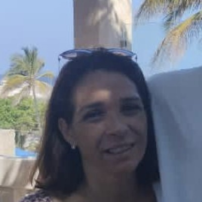
Ciencias sociales, innovación social y comunidad de Casablanca.
Mayelín García Remus es doctorante en Ciencias Sociales (Universidad de La Habana / UCLouvain) e investiga la innovación social y la gobernanza comunitaria del agua en el barrio de Casablanca, en la bahía de La Habana. Actualmente realiza una estancia de investigación en el centro CIRTES de la UCLouvain, en Louvain-la-Neuve.
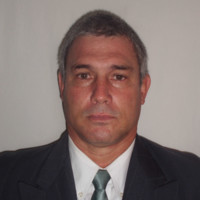